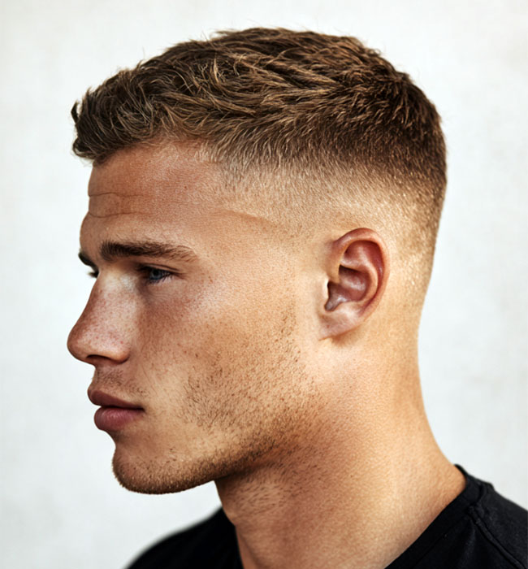
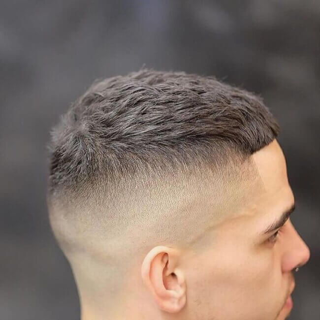

Miért számít, hogy melyik stílust választod?
A legtöbb ember úgy gondol a hajvágásra, mint ami akkor mutat jól, ha naponta foglalkozol vele. De ez nem törvényszerű – egy jól megválasztott stílus esetén a reggeli rutin maximum annyi, hogy megszárítod és kész. Nincs formázás, nincs wax, nincs tükör előtt töltött percek.
A kulcs az, hogy olyan hajvágást válassz, amelyik a természetes növekedési iránnyal és a hajtípusoddal dolgozik – nem ellene. Egy tapasztalt barber ezt figyelembe veszi a konzultáció során, és nem csak azt vágja le, amit mutatsz neki.

A legjobb stílusok, ha nem akarsz sokat foglalkozni a hajaddal
Nem minden rövid hajvágás egyformán könnyű – és nem minden egyszerűnek tűnő stílus az valójában. Az alábbiakban azokat gyűjtöttük össze, amelyek ténylegesen a legkevesebb napi törődést igénylik.
Gépi hajvágás (buzz cut)
A legegyszerűbb megoldás. Egységes hossz az egész fejen, nincs formázás, nincs termék. Megszárítod és kész. Szinte minden arcformán jól mutat, és a legkevesebb napi ráfordítást igényli az összes stílus közül.
Crew cut
Klasszikus, időtálló frizura – rövid oldal, enyhén hosszabb tető, nincs éles átmenet. Formázás nélkül is rendezett hatást ad. Különösen sűrű, egyenes hajhoz ideális.
Rövid fade hajvágás
Modern és letisztult – az oldalak rövidek, a tetőrész nem igényel napi formázást. Egy kevés hajagyag vagy por elég ahhoz, hogy 60 másodperc alatt rendbe tedd. Frissíttetni kell 3–4 hetente.
Texturált rövid haj
Ha egy kis karakter is kell, de még mindig egyszerű megoldást keresel. Minimális wax vagy hajpor elegendő – a tépett, természetes hatás épít a haj saját állagára, nem küzd ellene.

Melyik stílusokat érdemes kerülni?
Ha a cél a minimális törődés, vannak stílusok, amelyek egyszerűen nem alkalmasak erre – még akkor sem, ha első ránézésre egyszerűnek tűnnek.
- Hosszabb, rétegezett haj – sok formázást igényel, és ha nem foglalkozol vele, gyorsan rendezetlen hatást kelt
- Pompadour, quiff – ezek a stílusok napi formázás nélkül nem mutatnak jól, ezért nem jó választás, ha reggel nem akarsz időt tölteni velük
- Visszafésült stílusok – tartós pomádé vagy wax szükséges hozzájuk, és a haj nem "esik vissza" magától a helyére
- Erősen kontúrozott stílusok – ha az éles vonalak elmosódnak, azonnal rendezetlen benyomást keltenek
Tippek a könnyen kezelhető hajhoz
A stílus megválasztásán túl néhány alapszabály segít abban, hogy a haj valóban minimális törődéssel is jól nézzen ki.
- Válassz rövidebb hajvágást – a rövidebb haj kevesebbet igényel, és lassabban "ül le" a nap folyamán
- Egyszerű terméket használj – egy kis hajagyag vagy hajpor 30 másodperc alatt elvégzi a munkát; nincs szükség több réteg termékre
- Járj rendszeresen barberhez – egy jól karbantartott hajvágás könnyebb kezelni; ha hagyod kinyőni, több munkát igényel
- Kérj tanácsot a hajtípusod alapján – ami az egyik embernél könnyen kezelhető, az a másikon nem biztos; a borbély tud segíteni megtalálni a számodra valót
A Bosphorus barber shopban a hajvágás előtt mindig megkérdezik, hogy mennyi időt szeretnél a hajra fordítani a hétköznapokban. Ez befolyásolja a stílus megválasztását – nem csak azt, hogy mi néz ki jól, hanem azt is, hogy mi működik a valós életben.
Találd meg a számodra legegyszerűbb stílust
Foglalj időpontot a Bosphorus barber shopba – mondd el, mennyit szeretnél a hajaddal foglalkozni, és a borbély megtalálja azt a stílust, amelyik a legjobban illik az életmódodhoz.